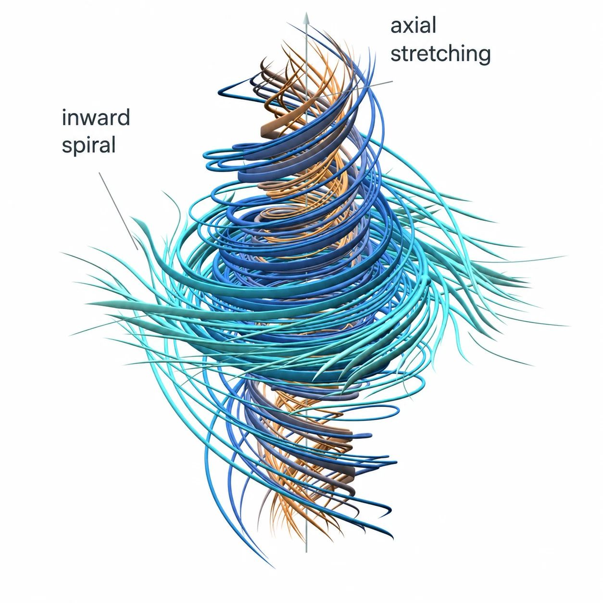
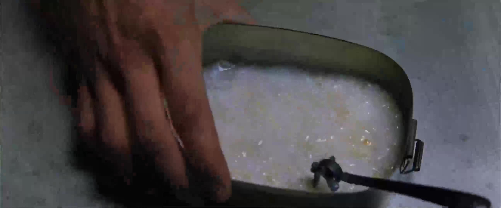

Agentic AI for Researchers
A workshop for economists & social scientists
Corvinus University, October 21, 2026
Forget the Superstar Model Hype
01
What does this figure mean?

Everything the Body Needs

The Matrix (1999), dir. Lana and Lilly Wachowski. Warner Bros.
What Are You Trading Off?
Where Is the Frontier?
Who Is Catching Up?
Separate the Model from the Harness
Model


Harness

Live: Exploring TED
There Is No Spoon
02
Do Not Try and Bend the Spoon
The Matrix (1999), dir. Lana and Lilly Wachowski. Warner Bros.
What Still Matters?
How Should We Talk?
Live: Ask the Data
Which Contract Amounts Can Be Added?
Automate, Don't Just Assist
03
Can You Fly That Thing?
Watch on YouTube / Trinity cockpit still
The Matrix (1999), dir. Lana and Lilly Wachowski. Warner Bros.
Why Write Code?
Live: Writing Stata
Live: Building a Skill
Automation at Scale
04
Can AI Read at Scale?
Live: Scaling Up
What Did It Cost?
Thank you
The durable investment is structure
koren.mk · koren.dev · codedthinking.com